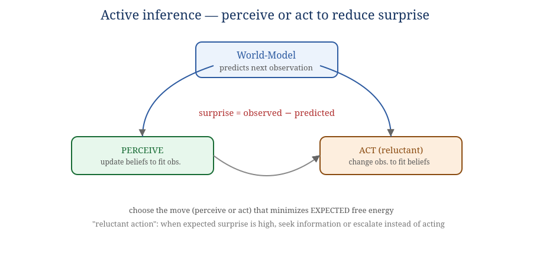
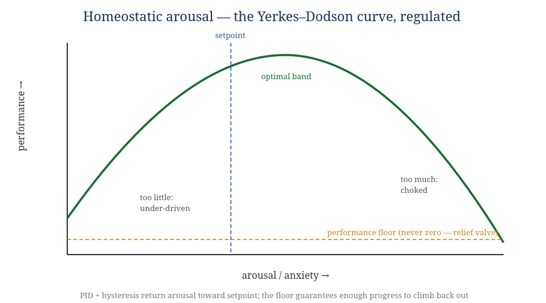

Book III — Physiology & Mathematics
The algorithms that run the organs. What Book II names and Book IV builds, this book makes compute.
An anatomy without physiology is a corpse. This book gives the working mathematics of each organ: how trust updates, how the world-model predicts, how arousal self-regulates, how shared reality stays consistent, how the immune system decides. It is organized by system, not as a flat list, so each result is shown doing a job.
The source material (Appendix A) collects ~200 mathematical and biological ideas. Most are generative analogies — real and useful for thinking, but not yet wired into an organ. A document that pretended to formalize all of them would be padding, and worse, would manufacture rigor where there is none. So this book draws a hard line:
Everything below respects one rule, stated in Book IV as INV-9 and made precise here.
G, T, Π, P : L → state (deterministic) | cell-output : context → sample (stochastic, logged)
Consequence for the math: every algorithm in this book that updates governing state is written as a fold over recorded events. It never calls a model; it consumes the recorded result of one. This is what makes audit, debugging, and the evolution loop (Book V) possible without bit-exact re-simulation of thought.
Statement. Model a holon's reliability in a domain as a probability θ with a Beta(α, β) prior. Each verified outcome updates the posterior: success → α+1, failure → β+1. The point estimate is the posterior mean; uncertainty is its variance.
θ̂ = α / (α + β) · Var = αβ / [(α+β)²(α+β+1)]
fn update_trust(prior: Beta, outcome: VerifiedOutcome) -> Beta {
match outcome { Success => Beta{ a: prior.a + w, b: prior.b },
Failure => Beta{ a: prior.a, b: prior.b + w } } // w = evidence weight
}
fn trust(b: Beta) -> (f64, f64) { (b.a/(b.a+b.b), variance(b)) } // mean, uncertainty
In SOMA. The Trust organ keeps a Beta posterior per (holon, domain, tier), updated only from verified outcomes (INV-4) folded from the log (INV-9). The mean drives authority; the variance feeds exploration (§3.3) and the Uncertainty organ (§4.3). Trust is domain-specific because a holon may be reliable at code review and not at planning.
Statement. Hash each holon's trust record into a leaf; combine pairwise to a single Merkle root. A snapshot commits to the root, not the blob. Any record's membership is provable in O(log n); any tampering changes the root.
root = fold_pairwise(hash, sorted(leaves)); // leaf_i = H(holon_i, beta_i) proof(i) = sibling hashes along the path i→root // O(log n)
In SOMA. Trust persistence is Merkle-rooted so the organism can prove its own reputation history without trusting a mutable store — the integrity of self-knowledge. Ties to INV-1 and the Continuity organ (S2).
Statement. To choose among holons for a task, sample θ̃ᵢ ~ Beta(αᵢ, βᵢ) for each and pick the max. This explores in proportion to the probability a holon is best — balancing exploitation of proven holons against giving uncertain ones a chance.
fn route(candidates: &[Beta]) -> usize {
candidates.iter().map(sample_beta).enumerate()
.max_by(|a,b| a.1.total_cmp(&b.1)).unwrap_index() // (illustrative)
}
In SOMA. Routing (S1) uses Thompson sampling so a new cell is not permanently starved by an incumbent — the "kill-the-winner" counterweight (Appendix A) that preserves diversity. The sampling seed is inside the routing holon's private 80%; the decision it produces is logged, keeping INV-9 intact (replay reads the decision, not the seed).
Statement. An adaptive system minimizes variational free energy F — an upper bound on surprise — either by updating beliefs to match observations (perception) or by acting to make observations match beliefs (action). Action selection minimizes expected free energy G(π) over policies π, which decomposes into a goal-seeking term and an uncertainty-reducing term.
F = Eq[log q(s) − log p(s,o)] · π* = argminπ G(π) = argminπ [ −(pragmatic value) − (epistemic value) ]

Figure 4.1 — Perceive or act, whichever reduces expected surprise.
fn orient(world: &mut Model, obs: Obs) { // perception step
let pred = world.predict();
let surprise = divergence(obs, pred);
world.update_to_reduce(surprise); // free-energy descent
}
fn choose(world: &Model, policies: &[Policy]) -> Policy {
policies.iter().min_by_key(|p| expected_free_energy(world, p)) // pragmatic + epistemic
}
In SOMA. This is the engine of the World-Model organ and the Deliberation organ (S5). The epistemic term is what makes the organism curious (seek information that reduces uncertainty); the pragmatic term is what makes it goal-directed. The choice to seek information instead of act is reluctant action (§5.2). It unifies perception, action, and the world-model under one objective.
Statement (Kalman). For a linear-Gaussian state, the optimal estimate combines prediction and noisy measurement, weighted by the Kalman gain K = Σ⁻ Hᵀ (HΣ⁻Hᵀ+R)⁻¹.
Statement (HMM). Visible signals hint at hidden state; the forward algorithm computes the posterior over hidden states given observations.
x̂ = x⁻ + K·(z − H·x⁻); Σ = (I − K·H)·Σ⁻ // Kalman update // HMM forward: αₜ(j) = bⱼ(oₜ) · Σᵢ αₜ₋₁(i)·aᵢⱼ
In SOMA. The World-Model organ uses Kalman-style smoothing for continuous self-signals (load, latency, progress) and an HMM to infer a holon's hidden mode (healthy / overloaded / drifting / silent) from its heartbeat and outcomes — the basis for the Sentinel organ's early warnings (§7).
Statement. Given a calibration set of past errors, a conformal predictor wraps any point estimate in a set guaranteed (under exchangeability) to contain the truth with probability 1−ε.
q = quantile(calibration_errors, 1 - eps); // conformal radius interval = (point - q, point + q); // coverage ≥ 1 - eps
In SOMA. The Uncertainty organ attaches conformal intervals to predictions, durations, and verifier scores, so "the organism knows what it does not know" is a calibrated number, not a vibe — the precondition, per Book I, that separates reasoning from confident hallucination.
Statement. The value of an observation is the expected reduction in entropy it brings: IG(X;Q) = H(X) − H(X | Q). Choose the question/check that maximizes it.
best = checks.max_by_key(|q| entropy(belief) - expected_entropy(belief, q));
In SOMA. Deliberation uses information gain to decide whether to ask HumanSeat, run a verifier, inspect memory, or rerun — spending scarce attention where it most reduces uncertainty (the epistemic term of §4.1 made discrete).
Statement. Define a hesitation rule: act only if the best policy's expected free energy is below a threshold and its conformal uncertainty (§4.3) is within tolerance; otherwise defer — gather information, escalate a tier, or request HumanSeat.
match choose(world, policies) {
p if efe(p) < tau && uncertainty(p) < u_max => Act(p),
_ => Defer(seek_info_or_escalate()), // visible second-guessing
}
In SOMA. This is the designed mechanism behind one of Book I's two "lights-on" indicators. The hesitation is observable (it is logged), and it is the same gate that routes hard cases to verification and HumanSeat — the brake and the second-guessing are one mechanism.
Statement. Bandit policies (UCB, Thompson §3.3) balance trying new options vs. using known-good ones. Topological sort orders a dependency DAG so prerequisites precede dependents; the critical path is the chain that determines total completion time.
order = topo_sort(task_dag); // prerequisites first critical = longest_path(task_dag); // the bottleneck chain
In SOMA. Cognition selects methods/tools as bandit arms; the organism schedules multi-step goals by topological order and watches the critical path to know which workflow is pacing the whole effort.
Statement. Performance is an inverted-U function of arousal: too little under-drives, too much chokes, an intermediate band is optimal.

Figure 6.1 — The regulated arousal curve, with a setpoint and a non-zero performance floor.
Statement. A PID controller drives arousal toward a setpoint using present error, accumulated error, and rate of change. Hysteresis uses different thresholds for raising vs. lowering a state, preventing flip-flop. A performance floor guarantees the organism can always make enough progress to recover.
u(t) = Kp·e(t) + Ki·∫e dt + Kd·de/dt
fn tick_arousal(s: &mut Homeostat, trust_trend: f64) {
let e = s.setpoint - arousal_from(trust_trend);
s.integral += e;
let u = KP*e + KI*s.integral + KD*(e - s.prev_e);
s.arousal = clamp(s.arousal - u, FLOOR, CEIL); // relief valve: never below FLOOR
s.prev_e = e;
}
In SOMA. This is the corrected anxiety experiment of Book I §7. The original spiraled — low trust → high anxiety → worse performance → lower trust — because it had no regulator. With a setpoint, an always-on relief rate, hysteresis, and a floor, the loop self-stabilizes. The failure was a missing regulator, not a bad idea. Soak tests (Book IV §12) assert it never stalls.
Statement. In a stable queue, work-in-progress = arrival rate × latency (L = λW). If arrivals or latency rise, queued work grows unless capacity does. Backpressure slows upstream when downstream saturates.
if wip > lambda * target_latency { throttle_intake(); } // Little's law as a guard
In SOMA. The Metabolism/Resource organ uses L = λW to size attention and concurrency under a carrying capacity, and applies backpressure so cells never flood verifiers or the workspace — the tragedy-of-the-commons guard (Appendix A).
Statement. Each record includes the previous record's hash; rewriting any record breaks every later hash. The chain is the organism's incorruptible memory of its own past.
record.hash = H(record.prev_hash || canonical(record.body)); verify: recompute forward from genesis; any mismatch halts replay.
In SOMA. The Event-Log organ; the substrate of INV-1 and of identity continuity (S2). A broken chain is detected, not silently accepted (fail-closed, INV-8).
Statement (Lamport). A logical counter gives a partial order of events even when wall clocks disagree. (Vector clocks) per-source counters detect whether two events are ordered or concurrent. (CRDTs) data types whose replicas merge without coordination and converge.
// Lamport: on event c = c+1; on receive(m) c = max(c, m.c) + 1 // Vector: V[self]++; on receive V = elementwise_max(V, m.V); V[self]++ // CRDT merge: join(a, b) is commutative, associative, idempotent → convergence
In SOMA. Within one organism the log gives a total order; across organisms (the ecosystem, Book II L6) Lamport/vector clocks order events and CRDTs let local perceptions merge without a central clock. This is how "shared reality" stays coherent across holons that never talk directly.
Statement. A sheaf assigns data to nodes/edges of a network with consistency conditions; a global "section" is a consistent assignment, and cohomology measures how far the network is from agreement.
In SOMA. Used (load-bearing at the ecosystem scale, conjectural within one organism) to quantify when holons disagree about shared state — trust levels, goal status — and to localize the disagreement before it causes a split. Flagged honestly: the single-organism case usually needs only vector clocks (§7.2); the sheaf earns its keep at L6.
Statement. A memory's activation decays exponentially unless reinforced; importance flows through links (PageRank / eigenvector centrality): a memory is salient if linked to salient memories.
activation *= exp(-dt / tau); // decay; reinforcement resets salience = power_iterate(link_matrix); // PageRank fixpoint
In SOMA. The Consolidation organ moves memory hot→warm→cold by decayed activation; recall promotes cold memory back to focus on similarity. Salience by centrality decides what consolidates into semantic memory and what composts into evidence (the necromass view, Book II §9).
Statement. The Wasserstein distance is the minimum cost to morph one distribution into another; it detects when a population (trust scores, outcomes, latencies) has drifted from a known-good baseline.
drift = wasserstein(current_distribution, baseline); if drift > d_max { flag(); }
In SOMA. Feeds the Sentinel organ (S8) and the evolution loop (Book V): distributional drift is the signal that the world changed and the organism must adapt, distinct from a single bad outcome.
Statement. Viability theory studies controls that keep a system's trajectory inside an acceptable set K over time. The viability kernel is the subset of states from which staying in K is possible.
if next_state(action) not_in viability_kernel(K) { reject(action); }
In SOMA. The organism maintains trust, autonomy, load, latency, context-exposure, and retry pressure inside a safe operating space — choosing controls that keep it viable rather than only maximizing a reward (the planetary-boundaries discipline, Appendix A). This is governance as staying alive well, not just goal-chasing.
Statement. A circuit breaker stops calling a repeatedly-failing part. CUSUM accumulates small deviations until they prove a shift. Negative selection rejects parts that react against "self" (invariants). The danger model responds to harm signals, not mere foreignness.
// circuit breaker
if failures_in_window > k { open_breaker(holon, cooldown); }
// CUSUM
S = max(0, S + (x - target - slack)); if S > h { signal_shift(); }
In SOMA. The Sentinel organ combines a fast innate layer (schema checks, capability bounds, negative selection against invariant-violating holons) with a slower adaptive layer (CUSUM/Wasserstein drift, danger- model prioritization by harm). The cytokine-storm cap bounds remediation so the immune response never destabilizes the body (Book IV §10).
These results are how the organism detects, in itself, the very phenomenon the whole design is about: coordinated behavior arising from parts.
The founding thesis (Book I) must be stated so it can be wrong. Loosely worded, it is unfalsifiable or riggable. Here is the disciplined form, with the controls that make it honest.
The controls that make it testable, not true-by-construction:
The candidate metric is causal emergence (§10): the suite is built so success requires macro-level causal information the single model, however large, cannot represent without the governed structure. If a large enough single model matches the organism with equal log access and honest budget, the thesis is wrong — and we say so. That willingness is the difference between a theory and a manifesto.
The algorithms above are implementable as written; these worked examples remove any remaining ambiguity by running concrete numbers through the load-bearing organs. An implementer should be able to reproduce each.
A summarizer holon starts with an uninformative prior Beta(1, 1): mean 0.50. It is verified-successful on 8 tasks and verified-failed on 2 (evidence weight w = 1 each). Posterior: Beta(1+8, 1+2) = Beta(9, 3).
mean = 9/(9+3) = 0.750 · Var = (9·3)/[(12)²·13] = 27/1872 = 0.0144 · sd ≈ 0.120
If the Authority organ requires mean ≥ 0.70 for direct-write in this domain, the holon now
qualifies; had two more failures landed (Beta(9,5), mean 0.643) it would be held at suggested-write.
Note the uncertainty (sd ≈ 0.12) is still wide at n = 10, so Thompson routing (§12.4) will still occasionally
explore alternatives rather than lock in.
Setpoint = 0.40; gains Kp = 0.5, Ki = 0.1, Kd = 0.2; floor = 0.15. Recent trust trend is negative, mapping to a raw arousal of 0.80, so error e = 0.40 − 0.80 = −0.40 (over-aroused). With integral accumulator I = −0.30 and previous error eprev = −0.35:
u = 0.5(−0.40) + 0.1(−0.30) + 0.2(−0.40 − (−0.35)) = −0.20 − 0.03 − 0.01 = −0.24
New arousal = clamp(0.80 − (−0.24)?, …) — the controller drives toward setpoint, so arousal moves by −|correction| toward 0.40: 0.80 → 0.56, still above setpoint but relaxing, and the performance multiplier (read off the Yerkes–Dodson curve, Fig 6.1) rises as arousal returns to the optimal band. Because the floor clamps at 0.15, performance can never be driven to zero — the holon always retains enough capacity to recover, which is exactly what the un-regulated experiment (Book I §7) lacked.
A duration estimator has 20 calibration residuals; the 90th-percentile absolute residual is q = 4.2 minutes. For a point estimate of 12.0 minutes at ε = 0.10, the conformal interval is 12.0 ± 4.2 = [7.8, 16.2] with ≥ 90% coverage. The Deliberation organ (§5.2) compares this width against its tolerance umax: a wide interval on a high-stakes task is precisely what trips reluctant action into defer.
Three candidate holons: A = Beta(9,3) (mean .75), B = Beta(30,10) (mean .75, tighter), C = Beta(2,1) (mean .67, very uncertain). A and B have equal means but B is more proven; C is unproven. Sampling θ̃ from each and taking the max routes mostly to A/B but occasionally to C in proportion to C's upside probability — so the newcomer is explored without being starved, and the tie between A and B is broken stochastically rather than by a frozen ranking. Over many tasks this is the kill-the-winner counterweight in action.
Baseline output-quality distribution has mean 0.82; the trailing-window distribution has mean 0.68 with a
1-D Wasserstein distance of 0.16 from baseline. With threshold dmax = 0.12, drift fires:
sentinel.drift.detected → trust re-evaluation → (if confirmed) authority contraction and a
regeneration cycle (Book V §9.1). CUSUM offers the same call incrementally: with slack k = 0.02 and threshold
h = 0.5, accumulating per-task shortfalls of ≈0.14 each crosses h within ~4 tasks — an earlier, cheaper alarm
than waiting for the full window.
| Organ / algorithm | Per-update cost | Notes |
|---|---|---|
| Bayesian trust update (§3.1) | O(1) | two counter increments; mean/var closed-form |
| Merkle trust commit (§3.2) | O(log n) | n = number of holons; proof path is log n |
| Thompson routing (§3.3) | O(k) | k = candidates; one Beta sample each |
| Active-inference orient (§4.1) | O(model) | dominated by the world-model's own update cost |
| Kalman update (§4.2) | O(d³) | d = state dim; d small for self-signals |
| Conformal interval (§4.3) | O(1) amortized | quantile precomputed; O(m log m) to (re)calibrate over m residuals |
| PID arousal tick (§6.2) | O(1) | constant-time control law |
| Hash-chain append/verify (§7.1) | O(1) / O(n) | append O(1); full verify scans n records |
| Wasserstein drift, 1-D (§8.2) | O(m log m) | sort of m samples; CUSUM is O(1) incremental |
| Causal-emergence estimate (§10) | problem-dependent | effective-information; tractable only on coarse partitions — a research cost (Appendix D) |
The point of the table: the organism's governing mathematics is cheap (mostly O(1) or O(log n)) — deliberately, because it runs on every event. The expensive parts (model inference, causal-emergence metrics) live where expense belongs: inside cells (non-deterministic content) and in offline research, never on the hot coordination path. This is the determinism boundary (§2) showing up as a cost boundary.
End of Book III. The exhaustive idea catalog — all ~200, labeled load-bearing or inspirational — is Appendix A. Book V puts this physiology in motion as the runtime life of the organism.